Visual Studio Code is an editor first and foremost and includes the features you need for highly productive source code editing. This topic takes you through the basics of the editor and helps you get moving with your code.
Keyboard shortcuts
Being able to keep your hands on the keyboard when writing code is crucial for high productivity. VS Code has a rich set of default keyboard shortcuts as well as allowing you to customize them.
- Keyboard Shortcuts Reference - Learn the most commonly used and popular keyboard shortcuts by downloading the reference sheet.
- Install a Keymap extension - Use the keyboard shortcuts of your old editor (such as Sublime Text, Atom, and Vim) in VS Code by installing a Keymap extension.
- Customize Keyboard Shortcuts - Change the default keyboard shortcuts to fit your style.
Multiple selections (multi-cursor)
VS Code supports multiple cursors for fast simultaneous edits. You can add secondary cursors (rendered thinner) with Alt+Click. Each cursor operates independently based on the context it sits in. A common way to add more cursors is with ⌥⌘↓ (Windows Ctrl+Alt+Down, Linux Shift+Alt+Down) or ⌥⌘↑ (Windows Ctrl+Alt+Up, Linux Shift+Alt+Up) that insert cursors below or above.
Note: Your graphics card driver (for example NVIDIA) might overwrite these default shortcuts.

⌘D (Windows, Linux Ctrl+D) selects the word at the cursor, or the next occurrence of the current selection.
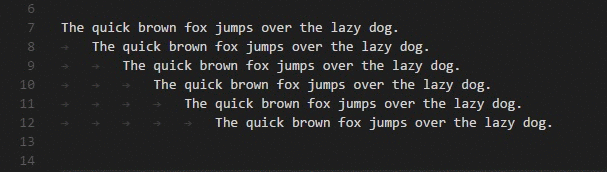
Tip: You can also add more cursors with ⇧⌘L (Windows, Linux Ctrl+Shift+L), which will add a selection at each occurrence of the current selected text.
Shrink/expand selection
Quickly shrink or expand the current selection. Trigger it with ⌃⇧⌘← (Windows, Linux Shift+Alt+Left) and ⌃⇧⌘→ (Windows, Linux Shift+Alt+Right)
Here’s an example of expanding the selection with ⌃⇧⌘→ (Windows, Linux Shift+Alt+Right):
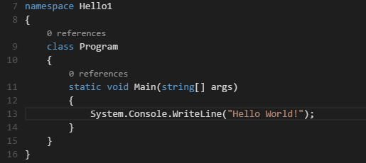
Column (box) selection
Hold Shift and Alt while dragging to do column selection:
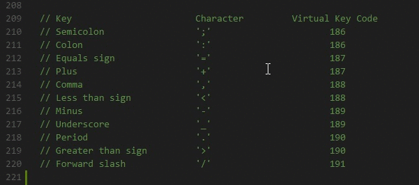
There are also default key bindings for column selection on Mac and Windows, but not on Linux.
| Key | Command | Command id |
|---|---|---|
| ⇧⌥⌘↓ (Windows Ctrl+Shift+Alt+Down, Linux ) | Column Select Down | cursorColumnSelectDown |
| ⇧⌥⌘↑ (Windows Ctrl+Shift+Alt+Up, Linux ) | Column Select Up | cursorColumnSelectUp |
| ⇧⌥⌘← (Windows Ctrl+Shift+Alt+Left, Linux ) | Column Select Left | cursorColumnSelectLeft |
| ⇧⌥⌘→ (Windows Ctrl+Shift+Alt+Right, Linux ) | Column Select Right | cursorColumnSelectRight |
| ⇧⌥⌘PageDown (Windows Ctrl+Shift+Alt+PageDown, Linux ) | Column Select Page Down | cursorColumnSelectPageDown |
| ⇧⌥⌘PageUp (Windows Ctrl+Shift+Alt+PageUp, Linux ) | Column Select Page Up | cursorColumnSelectPageUp |
You can edit your keybindings.json to bind them to something more familiar if you wish.
Save / Auto Save
By default, VS Code requires an explicit action to save your changes to disk, ⌘S (Windows, Linux Ctrl+S).
However, it’s easy to turn on Auto Save, which will save your changes after a configured delay or when focus leaves the editor. With this option turned on, there is no need to explicitly save the file. The easiest way to turn on Auto Save is with the File > Auto Save toggle which turns on and off save after a delay.
For more control over Auto Save, open User Settings or Workspace Settings and find the associated settings:
files.autoSave: Can have the values:off- to disable auto save.afterDelay- to save files after a configured delay.onFocusChange- to save files when focus moves out of the editor of the dirty file.onWindowChange- to save files when the focus moves out of the VS Code window.
files.autoSaveDelay: Configures the delay in milliseconds whenfiles.autoSaveis configured toafterDelay.
Hot Exit
VS Code will remember unsaved changes to files when you exit by default. Hot exit is triggered when the application is closed via File > Exit (Code > Quit on macOS) or when the last window is closed.
Hot exit can be disabled by changing the setting files.hotExit to false.
Search Across Files
VS Code allows you to quickly search over all files in the currently-opened folder. Simply type ⇧⌘F (Windows, Linux Ctrl+Shift+F) and type in your search. Search results are grouped into files containing the search term, with an indication of the hits in each file and its location. Expand a file to see a preview of all of the hits within that file. Then single-click on one of the hits to view it in the editor.
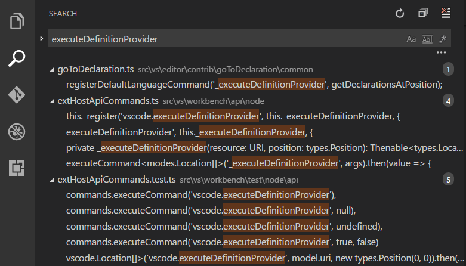
Tip: We support regular expression searching in the search box, too.
You can configure advanced search options by typing ⇧⌘J (Windows, Linux Ctrl+Shift+J). This will show additional fields to configure the search.
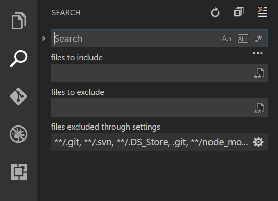
In the two input boxes below the search box, you can include and exclude files. Click on the toggle to the right to enable the glob pattern syntax:
*to match one or more characters in a path segment?to match on one character in a path segment**to match any number of path segments, including none{}to group conditions (e.g.{**/*.html,**/*.txt}matches all HTML and text files)[]to declare a range of characters to match (e.g.,example.[0-9]to match onexample.0,example.1, …)
VS Code excludes some folders by default to reduce the number of search results that you are not interested in (for example: node_modules). Open settings to change these rules under the files.exclude and search.exclude section.
Tip: From the Explorer you can right-click on a folder and select Find in Folder to search inside a folder only.
You can also Search and Replace across files. Expand the Search widget to display the Replace text box.
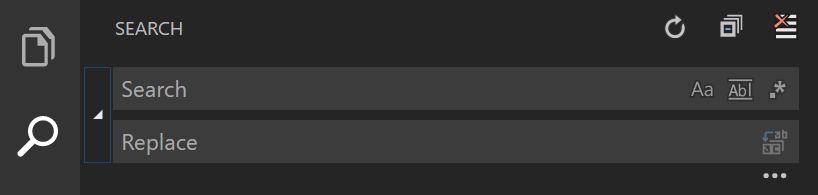
When you type text into the Replace text box, you will see a diff display of the pending changes. You can replace across all files from the Replace text box, replace all in one file or replace a single change.
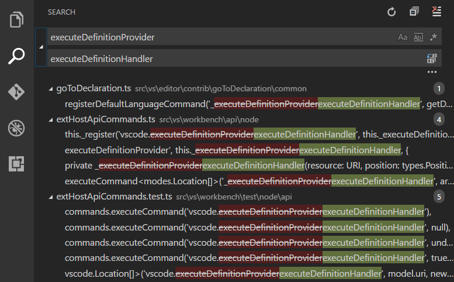
Tip: You can quickly reuse a previous search term by using ⌥↓ (Windows, Linux Alt+Down) and ⌥↑ (Windows, Linux Alt+Up) to navigate through your search term history.
IntelliSense
We’ll always offer word completion, but for the rich languages, such as JavaScript, JSON, HTML, CSS, Less, Sass, C# and TypeScript, we offer a true IntelliSense experience. If a language service knows possible completions, the IntelliSense suggestions will pop up as you type. You can always manually trigger it with ⌃Space (Windows, Linux Ctrl+Space). By default, Tab or Enter are the accept keyboard triggers but you can also customize these key bindings.
Tip: The suggestions filtering supports CamelCase so you can type the letters which are upper cased in a method name to limit the suggestions. For example, “cra” will quickly bring up “createApplication”.
Tip: IntelliSense suggestions can be configured via the
editor.quickSuggestionsandeditor.suggestOnTriggerCharacterssettings.
JavaScript and TypeScript developers can take advantage of the DefinitelyTyped type definition (typings) file repository to get IntelliSense for common JavaScript libraries (Node.js, React, Angular). You can find a good explanation on using typings files in the JavaScript language topic and the Node.js tutorial.
Learn more in the IntelliSense document.
Folding
You can fold regions of source code using the folding icons on the gutter between line numbers and line start. Move the mouse over the gutter to fold and unfold regions. The folding regions are evaluated based on the indentation of lines. A folding region starts when a line has a smaller indent than one or more following lines, and ends when there is a line with the same or smaller indent.
You can also use the following actions:
- Fold (⌥⌘[ (Windows, Linux Ctrl+Shift+[)) folds the innermost uncollapsed region at the cursor
- Unfold (⌥⌘] (Windows, Linux Ctrl+Shift+])) unfolds the collapsed region at the cursor
- Fold All (⌘K ⌘0 (Windows, Linux Ctrl+K Ctrl+0)) folds all region in the editor
- Unfold All (⌘K ⌘J (Windows, Linux Ctrl+K Ctrl+J)) unfolds all regions in the editor
- Fold Level X (⌘K ⌘2 (Windows, Linux Ctrl+K Ctrl+2) for level 2) folds all regions of level X, except the region at the current cursor position
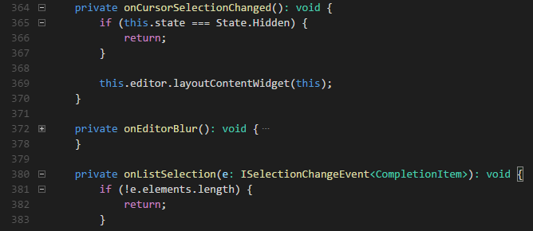
File Encoding Support
Set the file encoding globally or per workspace by using the files.encoding setting in User Settings or Workspace Settings.
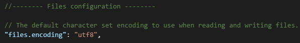
You can view the file encoding in the status bar.
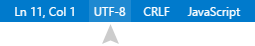
Click on the encoding button in the status bar to reopen or save the active file with a different encoding.
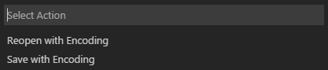
Then choose an encoding.
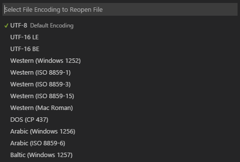
Next Steps
You’ve covered the basic user interface - there is a lot more to VS Code. Read on to find out about:
- Intro Video - Setup and Basics - Watch a tutorial on the basics of VS Code.
- User/Workspace Settings - Learn how to configure VS Code to your preferences through user and workspace settings.
- Code Navigation - Peek and Goto Definition, and more
- Integrated Terminal - Learn about the integrated terminal for quickly performing command line tasks from within VS Code.
- IntelliSense - VS Code brings smart code completions.
- Debugging - This is where VS Code really shines
Common Questions
Q: Is it possible to globally search and replace?
A: Yes, expand the Search view text box to include a replace text field. You can search and replace across all the files in your workspace. Note that if you did not open VS Code on a folder, the search will only run on the currently open files.
Q: How do I turn on word wrap?
A: You can control word wrap through the editor.wordWrap setting. By default editor.wordwrap is off but if you set to it to on, text will wrap on the editor’s viewport width.
|
You can toggle word wrap for the VS Code session with ⌥Z (Windows, Linux Alt+Z). Restarting VS Code will pick up the persisted editor.wordwrap value.
You can also add vertical column rulers to the editor with the editor.rulers setting which takes an array of column character positions where you’d like vertical rulers.
Q: How can I show more files in the OPEN EDITORS section?
A: You can configure the appearance of OPEN EDITORS through your settings. For example, you can set the maximum number of visible files before a scroll bar appears via the explorer.openEditors.visible setting and whether the OPEN EDITORS section should dynamically set its height via explorer.openEditors.dynamicHeight.